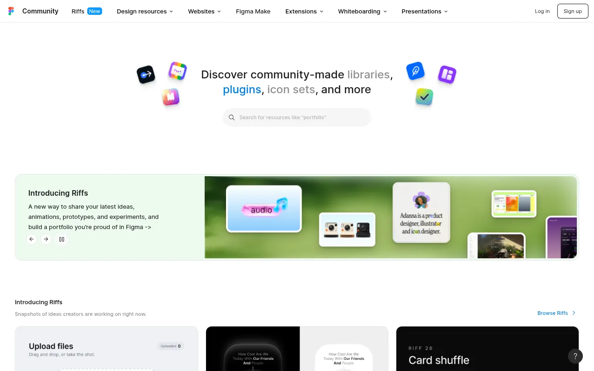
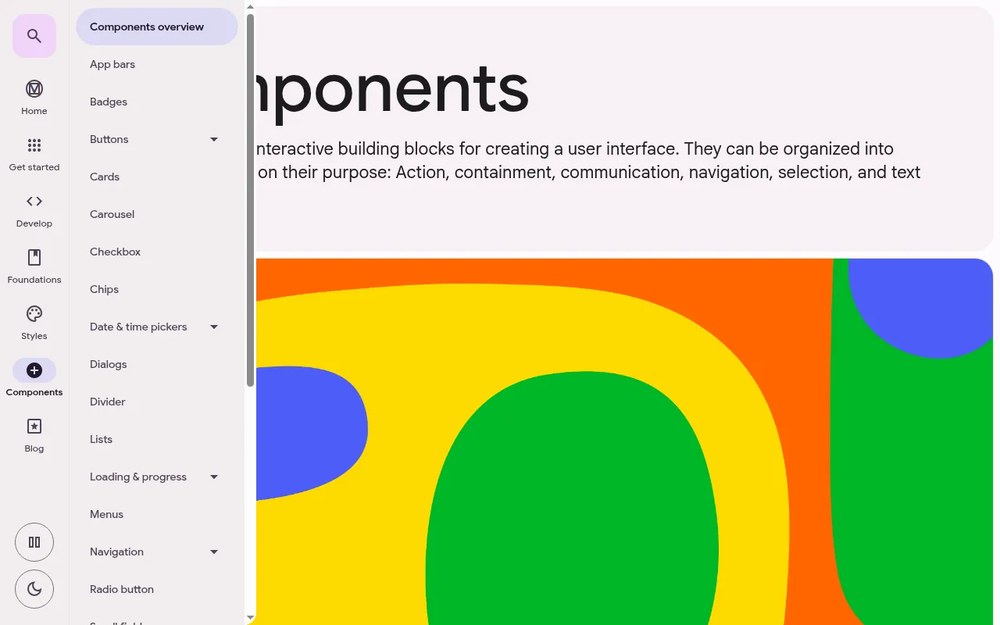
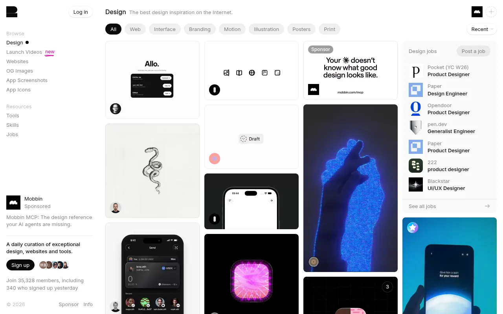
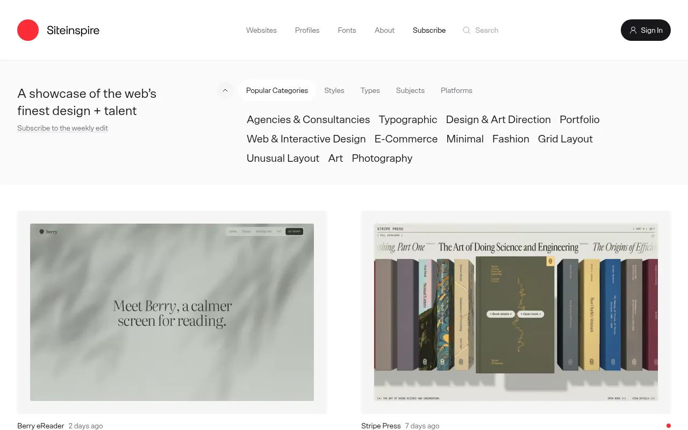

Модуль 0
Старт
Как учиться на этом курсе, где ты сейчас, первые шаги в Figma и с чего начинается проект «Кабинет ученика».
Как устроен курс
Курс устроен как обучение вождению. Сначала коротко объясняют, что где, потом сразу садишься за руль, а инструктор рядом подсказывает. Здесь «руль» это Figma и твои собственные экраны, а инструктор я. Учимся не на выдуманных примерах, а на настоящей школе AIKITAY: её кабинете, сайте, презентациях.
Одна глава это четыре шага
- Прочитать 3–5 абзацев. Новое слово выделено и сразу объяснено простыми словами. Рядом в скобках английское название: по нему удобно искать видео и примеры в интернете.
- Потрогать пример. Двигай ползунки, нажимай кнопки. Глаз учится быстрее, чем голова.
- Ответить на мини-тест. После ответа появляется объяснение, почему так. Ошибаться можно и полезно.
- Сделать практику в Figma или «смотрим». Это занимает 10 минут, не больше.
Пять блоков
А. Глаз. Учимся видеть экран, как дизайнер: куда смотрит человек первым делом и как называются все детали экрана. Б. Удобство. Учимся думать, как ученик: что ему нужно, по каким экранам он идёт, где может запутаться. Рисуем черновики и проверяем их. В. Красота и порядок. Собираем набор деталей (кнопки, карточки, цвета) и делаем из них кабинет, сайт, презентации. Г. Критика. Учимся объяснять, почему одно выглядит дорого, а другое дёшево. Д. Дополнительно. Как устроены анимации, кнопки и картинки, сделанные нейросетью.
Все модули уже открыты. Проходи по порядку: каждый следующий опирается на предыдущий.
Входной тест
Перед курсом пройди большой входной тест: 85 вопросов по 17 темам, от самых простых слов («что такое макет», «что такое пиксель») до технологий. Вариантов ответа нет: отвечаешь своими словами, а проверяю я, так что угадать не получится. Это не экзамен. Он рисует карту: где ты уверена, где плаваешь, а где пока пусто. По этой карте курс подстраивается под тебя: на главной странице появится твой личный маршрут, а у модулей пометки «плаваю» или «уверенно».
Тест можно прервать: ответы сохраняются, продолжишь с того же места. В конце скопируй ответы и пришли мне. Я проверю, пришлю строчку-результат, ты вставишь её в тест, и появится карта. По ней я перестрою программу под тебя. В конце курса пройдёшь его ещё раз и сравнишь.
Компьютер с нуля: мышь и клавиатура
Дизайнер весь день работает руками: мышкой двигает, клавишами командует. Чем увереннее руки, тем быстрее работа и меньше «ой, куда всё делось». Здесь то, что большинство уроков Figma считает очевидным и пропускает: сочетания клавиш, раскладка, клики. Если что-то уже знаешь, пролистай, но лучше пробеги глазами: тут есть мелочи, которые сильно экономят время.
Мышь и тачпад: пять движений
Внизу экрана полоска с иконками программ: на Windows она называется панель задач, на Mac Dock (док). Курсор это стрелочка на экране, она повторяет движения твоей руки. Тачпад это гладкий прямоугольник под клавиатурой ноутбука, он заменяет мышь: водишь пальцем, и курсор едет. Для Figma настоящая мышь удобнее, но тачпад тоже подойдёт.
| Движение | Мышь | Тачпад | Зачем |
|---|---|---|---|
| Клик (щелчок) | Один раз нажать левую кнопку | Нажать одним пальцем | Выбрать: кнопку, файл, слой в Figma |
| Двойной клик | Два раза быстро левой | Два раза быстро одним пальцем | Открыть файл, войти внутрь группы, начать править текст |
| Правый клик | Один раз правой кнопкой | Нажать двумя пальцами сразу | Открывает контекстное меню: список действий именно для того, на что нажала |
| Перетаскивание | Нажать левую, не отпускать, вести, отпустить | Нажать и вести, или три пальца | Двигать файлы, слои, прямоугольники; выделять рамкой |
| Прокрутка (скролл) | Крутить колёсико | Вести двумя пальцами вверх или вниз | Листать страницу; в Figma двигать холст |
Курсор меняет форму и этим подсказывает, что сейчас будет: стрелка значит «можно выбрать», ладонь с пальцем значит «это ссылка или кнопка, нажми», палочка I значит «тут можно печатать текст», двойная стрелка ↔ значит «потяни, и размер изменится».
Жду движения мышкой…
Клавиатура: какие клавиши главные
Большинство клавиш печатает буквы. Но есть клавиши-командиры, которые сами ничего не печатают, а меняют смысл других клавиш или управляют окнами. Их стоит знать в лицо:
| Клавиша | Где | Что делает |
|---|---|---|
| Enter ↵ | справа, большая | «Готово, выполняй»: отправить, подтвердить, новая строка |
| Esc | левый верхний угол | «Отмена, закрой»: закрыть меню, выйти из режима, снять выделение в Figma |
| Backspace ⌫ | справа над Enter | Стирает букву слева от курсора; в Figma удаляет выделенное |
| Delete | справа (на Mac её роль играет ⌫) | Стирает букву справа от курсора, удаляет выделенное |
| Shift ⇧ | две, слева и справа | Большая буква; в Figma ровная линия и квадрат без перекоса; выбрать несколько вещей кликами |
| Ctrl (Windows) / ⌘ Cmd (Mac) | слева внизу | Главный командир: вместе с буквой выполняет команду (копировать, сохранить…) |
| Alt / ⌥ Option | рядом с пробелом | Помощник: в Figma с ним показываются расстояния и делаются копии перетаскиванием |
| Tab ⇥ | слева, над Caps Lock | Перейти к следующему полю в форме |
| Пробел | самая длинная внизу | Пробел между словами; в Figma, если держать, курсор становится ладонью и двигает холст |
| Стрелки ← ↑ → ↓ | справа внизу | Двигать курсор в тексте; в Figma двигать выделенное на 1 пиксель (с Shift на 10) |
Раскладка: почему F иногда не работает
Раскладка это какой алфавит сейчас печатает клавиатура: русский или английский. На одной клавише нарисованы две буквы, например F и А. Какая из них напечатается, решает раскладка. Сменить раскладку: на Windows Alt + Shift или ⊞ + Пробел, на Mac Ctrl + Пробел или клавиша с глобусом 🌐. Текущая раскладка видна в углу экрана: «РУС / ENG» на Windows, флажок или буквы в верхней строке на Mac.
Важно для Figma: одиночные клавиши-команды (F фрейм, R прямоугольник, T текст) часто срабатывают только в английской раскладке. Если нажала F, а ничего не произошло, первым делом проверь раскладку.
Нажми любую клавишу
Щёлкни сначала сюда, в серую рамку, потом нажимай клавиши. Я скажу, какая это клавиша и какая у тебя раскладка.
Сочетания клавиш: как их нажимать
Запись Ctrl + C значит: нажми и держи первую клавишу, не отпуская её, коротко нажми вторую, потом отпусти обе. Не одновременно и не по очереди, а «держу и тыкаю». Как Shift и буква для заглавной: держишь Shift, жмёшь букву. Сочетания работают в любой раскладке.
На Mac почти везде вместо Ctrl нажимают ⌘ Cmd. Вот десять сочетаний, которые нужны каждый день, и в Figma тоже:
| Что | Windows | Mac | Пример |
|---|---|---|---|
| Копировать | Ctrl+C | ⌘+C | Выделила текст или прямоугольник, скопировала в «невидимый карман» |
| Вставить | Ctrl+V | ⌘+V | Достать из кармана: в чат, в Figma, в документ |
| Вырезать | Ctrl+X | ⌘+X | Убрать отсюда и положить в карман, чтобы вставить в другое место |
| Отменить | Ctrl+Z | ⌘+Z | Самое важное: вернуть как было. Можно нажимать много раз подряд |
| Вернуть отменённое | Ctrl+Shift+Z | ⌘+⇧+Z | Отменила лишнее, возвращаешь |
| Выделить всё | Ctrl+A | ⌘+A | Весь текст в поле или все слои на холсте |
| Дублировать (в Figma) | Ctrl+D | ⌘+D | Сделать копию рядом одним движением |
| Найти на странице | Ctrl+F | ⌘+F | Найти слово на длинной странице, например в этом курсе |
| Увеличить / уменьшить | Ctrl++ / − | ⌘++ / − | В браузере крупнее или мельче; в Figma приблизить холст |
| Сохранить | Ctrl+S | ⌘+S | В Word и других программах. Figma сохраняет сама |
Мини-тест
Как правильно нажать Ctrl + Z?
Первая клавиша держится, вторая «тыкается». Отпускаешь обе в конце.
В Figma нажимаешь F, а фрейм не появляется. Что проверить первым?
Одиночные клавиши-команды в Figma ждут английскую раскладку.
Что открывает правый клик?
«Контекстное» значит «по месту»: на файле одно меню, на тексте другое.
Компьютер с нуля: файлы, браузер, скриншоты
Вторая часть азов: где лежат файлы, как устроен браузер и как сделать снимок экрана, чтобы прислать мне на разбор. Это три вещи, которые нужны в работе дизайнера каждый день.
Файлы и папки
Файл это одна вещь, сохранённая в компьютере: фотография, текст, презентация. Как листок бумаги. Папка это коробка, в которую складывают файлы, чтобы не потерять. В папке могут лежать другие папки, как коробки в коробке.
Открыть свои файлы: на Windows программа Проводник (жёлтая папка на панели задач, или ⊞+E), на Mac программа Finder (синее улыбающееся лицо в доке). Слева в окне список главных мест:
- Загрузки (Downloads): сюда браузер кладёт всё, что ты скачала из интернета. Не можешь найти скачанный файл, ищи здесь.
- Рабочий стол (Desktop): то, что видно на экране под окнами.
- Документы и Изображения: обычные места для своих файлов.
У имени файла есть «хвостик» после точки, он называется расширение: урок8.png, план.docx, сайт.html. Расширение говорит, что это за файл и какой программой его открывать: .png и .jpg картинки, .pdf документ «только для чтения», .docx файл Word, .html страница сайта (открывается в браузере). Часто компьютер прячет расширения, но они всё равно есть.
Браузер: адрес, поиск и вкладки
Браузер это программа, через которую смотрят сайты: Chrome, Яндекс Браузер, Safari, Edge. Figma тоже работает прямо в браузере, ставить её не обязательно.
- Адресная строка: длинное поле наверху. Если написать туда точный адрес (
figma.com) и нажать Enter, откроется этот сайт. Если написать слова («как сделать фрейм в фигме»), откроется поиск. - Вкладки: «закладки-язычки» над адресной строкой. Каждая вкладка это отдельная открытая страница, как несколько книг, открытых на столе. Новая вкладка Ctrl+T (⌘+T), закрыть вкладку Ctrl+W (⌘+W), вернуть случайно закрытую Ctrl+Shift+T.
- Обновить страницу: кнопка-круговая стрелка ⟳ или F5 (⌘+R). Если сайт исправили, а ты видишь старое, обнови «по-настоящему»: Ctrl+Shift+R (⌘+⇧+R). Это сбрасывает кэш: браузер хранит копии страниц, чтобы открывать их быстрее, и иногда показывает устаревшую копию.
- Закладка (звёздочка ☆ справа в адресной строке): запомнить сайт, чтобы потом найти его одним кликом. Добавь в закладки этот курс и Figma.
Скриншот: снимок экрана
Скриншот (screenshot, «снимок экрана») это картинка того, что сейчас на экране. Дизайнеры делают их постоянно: сохранить понравившийся сайт в копилку, показать ошибку, прислать работу на разбор.
| Windows | Mac | |
|---|---|---|
| Выделить кусок экрана | ⊞+Shift+S, потом протяни рамку мышкой | ⌘+⇧+4, потом протяни рамку |
| Весь экран | PrtSc (Print Screen, справа сверху) | ⌘+⇧+3 |
| Куда попадает | В «невидимый карман»: сразу жми Ctrl+V в чате. Ещё сохраняется в «Изображения → Снимки экрана» | Файл на рабочем столе. Если держать ещё и Ctrl, попадёт в «карман» и вставится через ⌘+V |
Облако: почему в Figma нет кнопки «Сохранить»
Word хранит файл в твоём компьютере, поэтому его нужно сохранять, иначе всё пропадёт. Figma хранит файлы в облаке, то есть на больших компьютерах компании в интернете. Каждое твоё действие сохраняется само через секунду. Плюсы: файл не потеряется, если сломается ноутбук, и его можно открыть с любого компьютера, просто войдя в свой аккаунт. Минус: без интернета Figma работать не будет.
Мини-тест
Скачала картинку из интернета и не можешь её найти. Где искать первым делом?
Браузер по умолчанию кладёт всё скачанное в «Загрузки».
Файл называется urok.pdf. Что значит .pdf?
Хвостик после точки это тип файла.
Сайт исправили, а у тебя открывается старая версия. Что сделать?
Браузер показал сохранённую старую копию. «Жёсткое» обновление скачивает страницу заново.
Figma: открываем и кладём первый лист
Figma это программа, в которой рисуют экраны приложений и сайтов. Представь большой пустой стол, на который ты раскладываешь листы бумаги и рисуешь на них. Стол это холст Figma, листы это будущие экраны. Всё, что ниже, делай сразу руками, по одному шагу.
Шаг 1. Заходим и создаём файл
- Открой figma.com и войди (через Google проще всего). Бесплатного тарифа хватает. Если сайт не открывается, включи VPN.
- Ты попадёшь на главную страницу со списком файлов. Там пока пусто, это нормально.
- Справа вверху есть кнопка «+ Create» (создать). Нажми её и выбери «Design» (дизайн). Не «FigJam» (это доска для стикеров), не «Slides» (презентации) и не «Make» (там чат с ИИ). Нам нужен именно Design.
- Откроется новый файл. Слева вверху написано «Untitled» (без названия). Нажми на это слово два раза и назови файл «Курс AIKITAY».
Интерфейс Figma только на английском. Ниже рядом с каждой кнопкой есть перевод.
Шаг 2. Пустое серое окно, и это правильно
Новый файл выглядит как большое серое поле, и на нём ничего нет. Ничего не сломалось: это пустой стол, на котором ещё не лежит ни одного листа. Лист ты положишь сама в шаге 3.
Шаг 3. Кладём лист: фрейм
Фрейм (frame) это лист, положенный на стол. На холсте можно рисовать и без листа, но тогда рисунок висит в воздухе. Экран телефона всегда рисуют на фрейме нужного размера. Попробуй здесь, а потом в Figma.
- В Figma щёлкни мышкой по серому полю, чтобы окно было активным.
- Нажми на клавиатуре букву F (в английской раскладке). Или нажми значок # на нижней панели.
- Справа появится список размеров. Открой раздел Phone (телефон) и нажми iPhone 16.
- Готово: на холсте белый прямоугольник 393 на 852. Если его не видно, нажми Shift + 1, Figma покажет всё, что есть на холсте.
Шаг 4. Слои: бумажки на листе
Всё, что ты кладёшь на лист, называется слой (layer). Прямоугольник это слой, надпись это слой, картинка это слой. Представь, что ты вырезаешь бумажки и кладёшь их на лист одну на другую. Та, что положена позже, лежит сверху и может закрыть нижнюю.
Левая панель Layers показывает стопку бумажек списком. Что выше в списке, то выше и в стопке. Строчки со сдвигом вправо лежат внутри листа над ними.
Как это в жизни: Figma Community
Figma это не только программа, но и огромная библиотека чужих файлов. Открыть чужой макет и посмотреть, как он собран, очень полезно.

123- Поиск по готовым файлам. Введи «wireframe kit», «mobile UI kit» или «icons», и получишь бесплатные наборы, которые можно открыть у себя одной кнопкой.
- Меню разделов: ресурсы для дизайна, сайты, презентации, расширения (плагины).
- Чужие работы можно открыть и разобрать по слоям: как сделано, какие отступы, какие компоненты. Лучший учебник.
Скриншоты настоящих сайтов, ноябрь 2026. Наведи на пункт или нажми его, и номер на картинке подсветится.
Мини-тест
Ты открыла новый файл, а там только серое поле. Что делать?
Пустой холст в новом файле это норма. Лист (фрейм) кладёшь сама.
Текст не видно, хотя в списке слоёв он есть. Скорее всего…
Что выше в списке слоёв, то лежит сверху. Перетащи текст выше.
Figma: три умных приёма
Фрейм и слои у тебя уже есть. Теперь три приёма, ради которых дизайнеры и любят Figma. Каждый экономит часы работы.
Автолейаут: полка, которая сама держит промежутки
Представь книжную полку, где между книгами всегда ровно палец. Ставишь новую книгу, и остальные сами сдвигаются, чтобы промежутки остались одинаковыми. Убираешь книгу, и полка сама сжимается. Это и есть автолейаут (auto layout), по-русски «авто-расстановка».
Без него ты двигаешь каждую кнопку мышкой и на глаз ловишь одинаковые расстояния. С ним Figma делает это за тебя. Попробуй:
- В Figma нарисуй три кнопки внутри фрейма (прямоугольник R плюс текст T, или просто три надписи).
- Выдели их все: зажми Shift и щёлкни по каждой.
- Нажми Shift + A. Вокруг появится рамка, кнопки выстроятся ровно.
- Справа в разделе Auto layout есть стрелки (столбик или строка), поле gap (промежуток между вещами) и padding (поля от рамки до вещей). Поменяй цифры и посмотри.
- Выдели одну кнопку и нажми Ctrl + D (на Mac Cmd + D): появится копия, и все сдвинутся.
Компонент: образец и его копии
Вспомни шаблон письма в почте. Ты правишь шаблон, и все новые письма уже с правкой. Компонент (component) работает так же, только мгновенно и для уже сделанных копий. Сделала кнопку образцом, расставила 20 копий по экранам, потом решила скруглить углы. Правишь образец, и меняются все 20 копий.
- Выдели готовую кнопку.
- Нажми Ctrl + Alt + K (на Mac Cmd + Option + K). Или правая кнопка мыши и Create component. В слоях у кнопки появится фиолетовый ромбик.
- Скопируй её Ctrl + D несколько раз. Копии отмечены пустым ромбиком ◇.
- Поменяй цвет у образца и посмотри на копии.
Стили и переменные: краски с именами
Представь коробку красок, где на каждой баночке написано, зачем она: «Цвет кнопки», «Цвет текста», «Фон». Ты красишь кнопки из баночки «Цвет кнопки». Если потом в баночку налить другой оттенок, все кнопки перекрасятся сами. Это стиль (style) или переменная (variable). Так же сохраняют шрифты («Заголовок», «Обычный текст») и размеры отступов.
- Выдели кнопку. Справа найди раздел Fill (заливка).
- Нажми значок из четырёх точек рядом с цветом, потом +. Назови стиль «Цвет кнопки».
- Покрась этим стилем ещё пару вещей. Потом поменяй цвет самого стиля и посмотри, что всё перекрасилось.
Переменные это то же самое, только умнее: в них можно хранить и цвета, и числа, и держать два набора сразу (светлая и тёмная тема). Подробно они будут в модуле «Дизайн-система».
Горячие клавиши первого дня
Как это в жизни: компоненты у Google

123- Каждая строка меню это компонент: кнопки, карточки, чипы, диалоги, меню. Google один раз нарисовал их, и тысячи приложений собирают экраны из этих деталей.
- Стрелка у «Buttons»: у компонента есть варианты (кнопка залитая, контурная, текстовая). В Figma это называется variants.
- «Interactive building blocks», «строительные кубики интерфейса»: так сам Google объясняет, что такое компонент.
Скриншоты настоящих сайтов, ноябрь 2026. Наведи на пункт или нажми его, и номер на картинке подсветится.
Мини-тест
Что делает автолейаут?
Добавила кнопку, и остальные сами подвинулись. Промежутки задаёшь цифрой, а не на глаз.
Ты поменяла цвет у кнопки-образца, и он поменялся на всех 20 экранах. Значит, кнопка была…
Компонент это образец с копиями. Группа просто скрепляет слои, связи между копиями у неё нет.
Зачем давать цвету имя «Цвет кнопки», а не просто выбирать его каждый раз?
Баночка с именем: меняешь содержимое один раз, и перекрашивается всё.
Официальная справка и бесплатные видеоуроки: help.figma.com (на английском, в браузере можно включить перевод страницы).
Как присылать работы на разбор
Разбор это когда ты показываешь свою работу, а я говорю, что получилось и что поправить. Как учитель проверяет тетрадь, только с объяснениями. Именно на разборах учатся быстрее всего.
- Пришли картинку своего экрана. Как её сделать в Figma: щёлкни по названию фрейма (синяя подпись над листом), справа в самом низу найди раздел Export (сохранить как картинку), нажми +, оставь PNG и выбери 2x (в два раза чётче), потом нажми кнопку Export. Картинка сохранится на компьютер. Можно и проще: сделай снимок экрана.
- Напиши номер главы и что хотела сделать: «Глава А1.4, отступы карточки, хотела, чтобы было воздушно».
- Если сомневаешься в чём-то, скажи, в чём именно.
Я отвечаю в одном формате: что хорошо → что поправить и почему → одно задание на доработку. Почему так: сильная сторона закрепляется, а одна правка за раз действительно делается, в отличие от списка из десяти.
Насмотренность каждый день
Насмотренность это как вкус у повара. Повар пробует много блюд и со временем может сказать не просто «вкусно», а «тут не хватает кислоты». Дизайнер смотрит много экранов и учится говорить не «красиво», а «красиво, потому что много свободного места вокруг заголовка». Растёт насмотренность от маленькой ежедневной привычки.
Правило 10 минут
- Открой один источник: Mobbin (экраны приложений), Siteinspire (сайты) или любой из виджета референсов.
- Найди 1–3 экрана, которые цепляют, или, наоборот, раздражают.
- Сохрани в референсы и отметь кнопками-метками, что именно: «Заголовок», «Сетка и отступы», «Кнопки». Метки названы так же, как главы курса.
- Одной строкой напиши почему. Не «красиво», а «крупный заголовок и много воздуха вокруг».
Как это в жизни: где смотреть каждый день

12
34- Разделы: сайты, экраны приложений, иконки. Выбираешь один на сегодня.
- Лента свежих работ. Листаешь 10 минут, одну лучшую сохраняешь в копилку с подписью «почему».
- Фильтр по стилю: Minimal, Typographic, Portfolio. Удобно искать что-то конкретное, например «спокойные сайты с крупным шрифтом».
- Карточка сайта. Нажми и открой сам сайт: смотри его живьём, с движением и прокруткой, а не только картинку.
Скриншоты настоящих сайтов, ноябрь 2026. Наведи на пункт или нажми его, и номер на картинке подсветится.
Проект: Кабинет ученика AIKITAY
Через весь курс ты делаешь одну настоящую вещь: личный кабинет ученика AIKITAY. Это страница или приложение, куда ученик заходит, чтобы увидеть урок, сделать домашку и посмотреть свои успехи. Как ремонт квартиры по шагам: сначала план, потом черновая отделка, потом чистовая. Каждый модуль добавляет кусочек, и к концу у тебя готовый дизайн, который можно отдать программисту.
- Старт: короткий бриф.
- Блок Б: интервью с учениками, путь ученика, наброски, прототип и проверка.
- Блок В: набор компонентов и пять экранов: главная, урок дня, задание, результат, профиль.
- Блок Г: самокритика по чек-листу и доработка.
Что такое бриф
Бриф (brief) это короткое задание на 5–10 строк: для кого делаем, зачем и что важно. Как список, с которым идёшь в магазин. Без списка купишь много красивого, но не то, что нужно для ужина. Без брифа нарисуешь красивый экран, который не помогает ученику.
Мини-тест
С чего начинается работа над кабинетом?
Стиль выбирают под задачу. Без брифа красота получается «вообще», а не для ученика.
Книги и источники
Курс опирается на классику, которую читают во всех школах. Читать всё не обязательно, но к главам будут ссылки на нужные места.
Словарик модуля
Все слова этого модуля в одном месте. Пробегись глазами: если слово понятно и можешь объяснить его своими словами, нажми «Знаю». Галочка «показать только незнакомые» спрячет выученные, так удобно повторять. Итоговый тест по всем словам курса в конце курса.